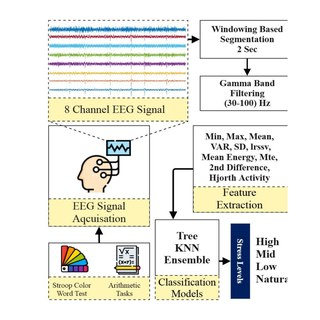

Exploring Gamma-Band Filtered Features and Machine Learning for Resource-Efficient Multi-Level Cognitive Load Classification Using EEG

Abstract
Cognitive load classification is a crucial task for understanding mental effort during cognitively demanding activities and for enabling efficient EEGbased monitoring systems. This paper presents a lightweight approach for multi-level cognitive load classification using gamma band filtered EEG features and classical machine learning models. The proposed framework extracts compact statistical, energy-based, and temporal descriptors from non-overlapping 2s gamma-band EEG segments and reduces computational complexity by focusing on task-relevant spectral content. Feature relevance is optimized, and three widely used classifiers, decision trees, k-nearest neighbors, and ensemble-based models are evaluated using Bayesian hyperparameter optimization and 10-fold crossvalidation. Experimental results demonstrate that the optimized ensemble classifier achieves the highest accuracy of 98.52% for the mental arithmetic task and 98.40% for the Stroop Color Word Task. The framework is validated on EEG data collected from 15 participants using an 8-channel OpenBCI system and provides a practical, resource-efficient solution for real-time, lowchannel cognitive load monitoring. The results highlight the effectiveness of gamma-centric statistical features over more computationally intensive approaches, offering a favorable balance between accuracy and efficiency.
In one line
Gamma-band EEG features with resource-efficient machine learning classify multiple levels of cognitive load.
Cite
@inproceedings{rasel2026exploring,
title = {Exploring Gamma-Band Filtered Features and Machine Learning for Resource-Efficient Multi-Level Cognitive Load Classification Using EEG},
author = {Nur Md. Atiquzzaman Rasel and Sadman Rahman and Kazi Newaj Faisal},
booktitle = {Proceedings of IEEE QPAIN},
year = {2026},
url = {https://ieeexplore.ieee.org/abstract/document/11545759}
}
Related papers
- MODWT-MRA-Based Activity-Aware Epilepsy Discrimination Using Single-Channel Wearable EEG During Activities of Daily LivingResults in Engineering · 2026
- Single-Channel Wearable EEG for ADL Recognition in Healthy and Epileptic Cohorts Using MODWT-MRA and Machine LearningBiomedical Signal Processing and Control · 2026
- HatSeqNet: A Sequence-Based Deep Learning Model for Cross-Subject Driver Drowsiness Detection Using Single-Channel EEG SignalIEEE Sensors Journal · 2026
* Equal contribution / co-first authorship.